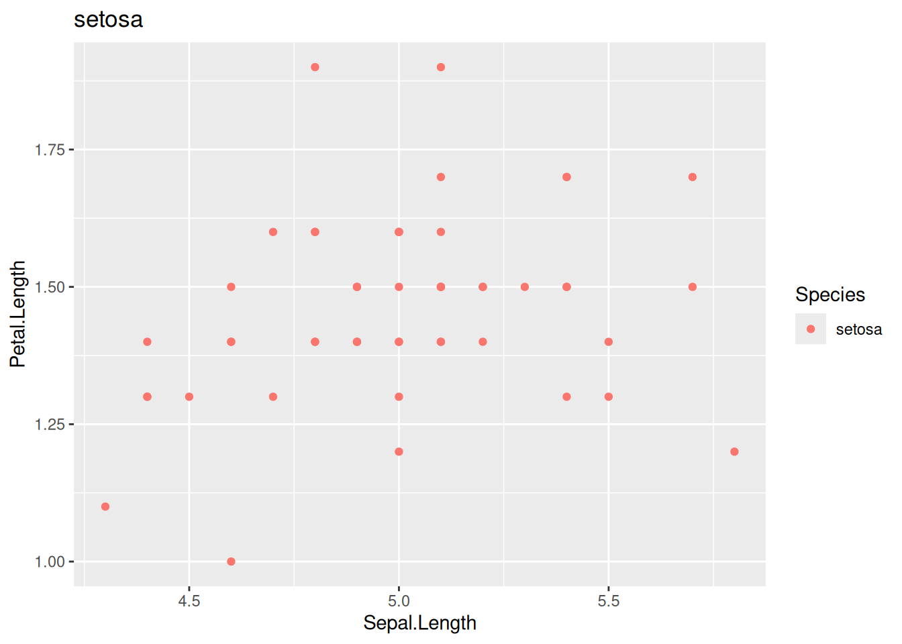
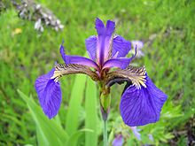

library(ggplot2)1 setosa
The setosa species is subsetted from the data.
iris_filtered <- subset(iris, iris$Species == params$name)head(iris_filtered) Sepal.Length Sepal.Width Petal.Length Petal.Width Species
1 5.1 3.5 1.4 0.2 setosa
2 4.9 3.0 1.4 0.2 setosa
3 4.7 3.2 1.3 0.2 setosa
4 4.6 3.1 1.5 0.2 setosa
5 5.0 3.6 1.4 0.2 setosa
6 5.4 3.9 1.7 0.4 setosa2 Plots
ggplot(iris_filtered,aes(Sepal.Length,Petal.Length,col=Species))+
geom_point()+
labs(title=params$name)

3 Image
